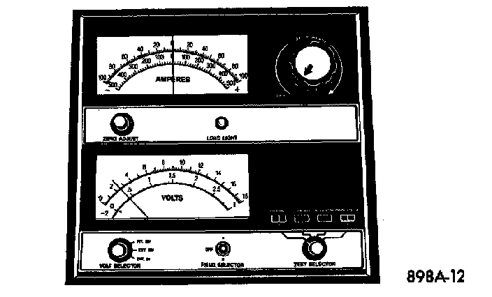

Battery Charging
A battery is fully-charged when:- All cells are gassing freely during battery charging.
- A green color is visible in the sight glass of the built-in test indicator.
- Three corrected specific gravity tests, taken at one-hour intervals, indicate no increase in the specific gravity.
- Open-circuit voltage is 12.4 Volts or above.
WARNING:
- IF THE BATTERY SHOWS SIGNS OF FREEZING, LEAKING, LOOSE POSTS, OR LOW ELECTROLYTE LEVEL, DO NOT TEST, ASSIST-BOOST, OR CHARGE. THE BATTERY MAY ARC INTERNALLY AND EXPLODE. PERSONAL INJURY AND/OR VEHICLE DAMAGE MAY RESULT.
- EXPLOSIVE HYDROGEN GAS FORMS IN AND AROUND THE BATTERY. DO NOT SMOKE, USE FLAME, OR CREATE SPARKS NEAR THE BATTERY. PERSONAL INJURY AND/OR VEHICLE DAMAGE MAY RESULT
- THE BATTERY CONTAINS SULFURIC ACID, WHICH IS POISONOUS AND CAUSTIC. AVOID CONTACT WITH THE SKIN, EYES, OR CLOTHING. IN THE EVENT OF CONTACT, FLUSH WITH WATER AND CALL A PHYSICIAN IMMEDIATELY. KEEP OUT OF THE REACH OF CHILDREN.
- IF THE BATTERY IS EQUIPPED WITH REMOVABLE CELL CAPS, BE CERTAIN THAT EACH OF THE CELL CAPS IS IN PLACE AND TIGHT BEFORE THE BATTERY IS RETURNED TO SERVICE. PERSONAL INJURY AND/OR VEHICLE DAMAGE MAY RESULT FROM LOOSE OR MISSING CELL CAPS.
CAUTION:
- Always disconnect and isolate the battery negative cable before charging a battery. Do not exceed sixteen Volts while charging a battery. Damage to the vehicle electrical system components may result.
- Battery electrolyte will bubble inside the battery case during normal battery charging. Electrolyte boiling or being discharged from the battery vents indicates a battery overcharging condition. Immediately reduce the charging rate or turn off the charger to evaluate the battery condition. Damage to the battery may result from overcharging.
- The battery should not be hot to the touch. If the battery feels hot to the touch, turn oft the charger and let the battery cool before continuing the charging operation. Damage to the battery may result.
Some battery chargers are equipped with polarity-sensing circuitry. This circuitry protects the charger and/or the battery from being damaged if they are improperly connected. If the battery state-of-charge is too low for the polarity-sensing circuitry to detect, the charger will not operate. This makes it appear that the battery will not accept charging current. Refer to the instructions provided with the battery charger to bypass the polarity-sensing circuitry.
After the battery has been charged to 12.4 Volts or greater, perform a load test to determine the battery cranking capacity If the battery wilt endure a load test, return the battery to use. If the battery will not endure a load test, it is faulty and must be replaced.
Clean and inspect the battery hold-downs, tray, terminals, posts, and top before completing service. See the Battery Removal and Installation procedures for more information.
Charging A Completely Discharged Battery
The following procedure should be used to recharge a completely discharged battery. Unless this procedure is properly followed, a good battery may be needlessly replaced.
Voltmeter Accurate to 1/10 Volt Connected - Typical:

1. Measure the voltage at the battery posts with a voltmeter, accurate to 1/10 (0.10) volt. If the reading is below ten Volts, the charge current will be low. It could take some time before the battery accepts a current greater than a few milliamperes. Such low current may not be detectable on the ammeters built into many chargers.
2. Disconnect and isolate the battery negative cable. Connect the battery charger leads. Some battery chargers are equipped with polarity-sensing circuitry. This circuitry protects the charger and/or the battery from being damaged if they are improperly connected. If the battery state-of-charge is too low for the polarity-sensing circuitry to detect, the charger will not operate. This makes it appear that the battery will not accept charging current. Refer to the instructions provided with the battery charger to bypass the polarity-sensing circuitry.
3. Battery chargers vary in the amount of voltage and current they provide. The amount of time required for a battery to accept measurable charger current at various voltages is shown in the Charge Rate chart.
Voltage Hours
16.0 Volts maximum up to 4 hours
14.0 to 15.9 Volts up to 8 hours
13.9 Volts or less up to 16 hours
If the charge current is still not measurable at the end of the charging time, the battery is faulty and must be replaced. If the charge current is measurable during the charging time, the battery may be good and the charging should be completed in the normal manner.
Charging Time Required
The time required to charge a battery will vary, depending upon the following factors:
- Battery Capacity - A completely discharged heavy-duty battery requires twice the charging time of a small capacity battery
- Temperature - A longer time will be needed to charge a battery at -18 °C (0 °F) than at 27 °C (80 °F). When a fast charger is connected to a cold battery, the current accepted by the battery will be very low at first. As the battery warms, it will accept a higher charging current rate (amperage).
- Charger Capacity - A charger that supplies only five amperes will require a longer charging time. A charger that supplies twenty amperes or more will require a shorter charging time.
- State-Of-Charge - A completely discharged battery requires more charging time than a partially discharged battery Electrolyte is nearly pure water in a completely discharged battery At first, the charging current (amperage) will be low. As the battery charges, the specific gravity of the electrolyte will gradually rise.
WARNING: NEVER EXCEED TWENTY AMPERES WHEN CHARGING A COLD (-1 °C/30 °F) BATTERY. THE BATTERY MAY ARC INTERNALLY AND EXPLODE. PERSONAL INJURY AND/OR VEHICLE DAMAGE MAY RESULT.